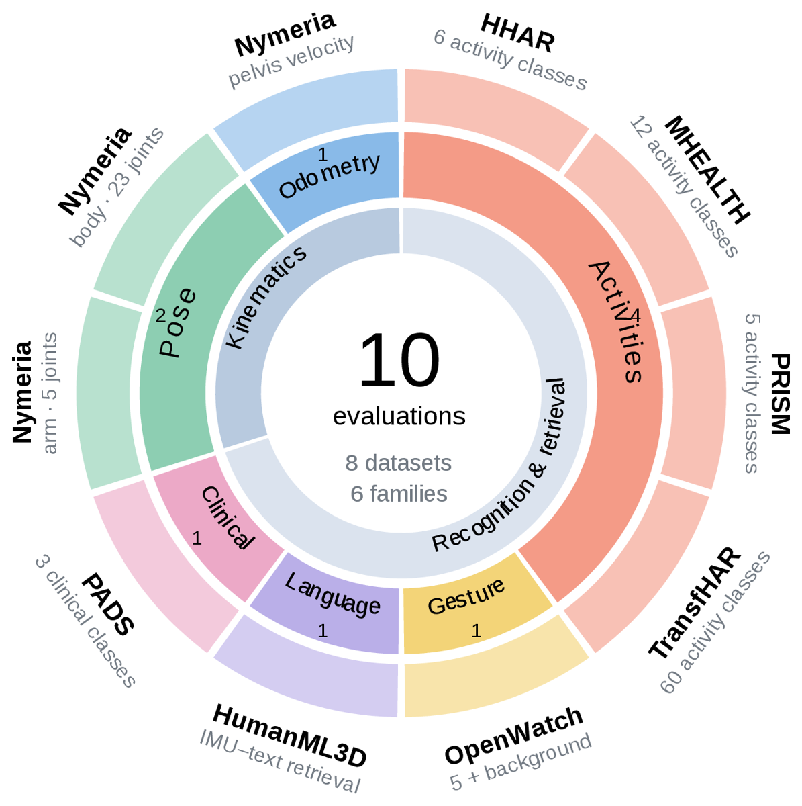
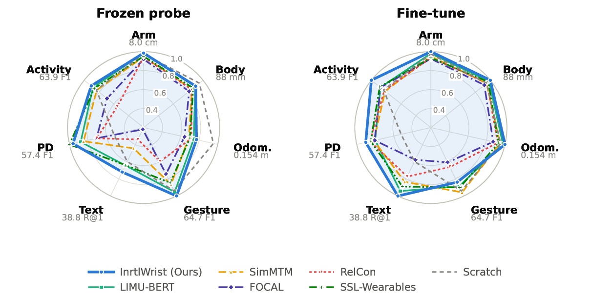
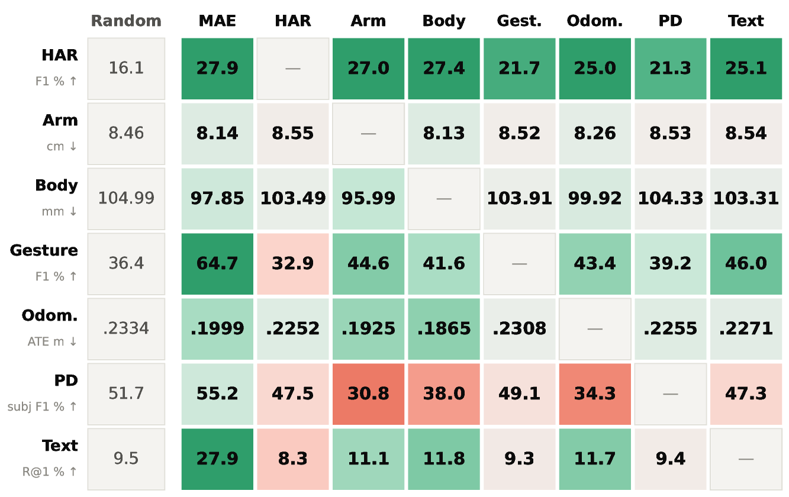
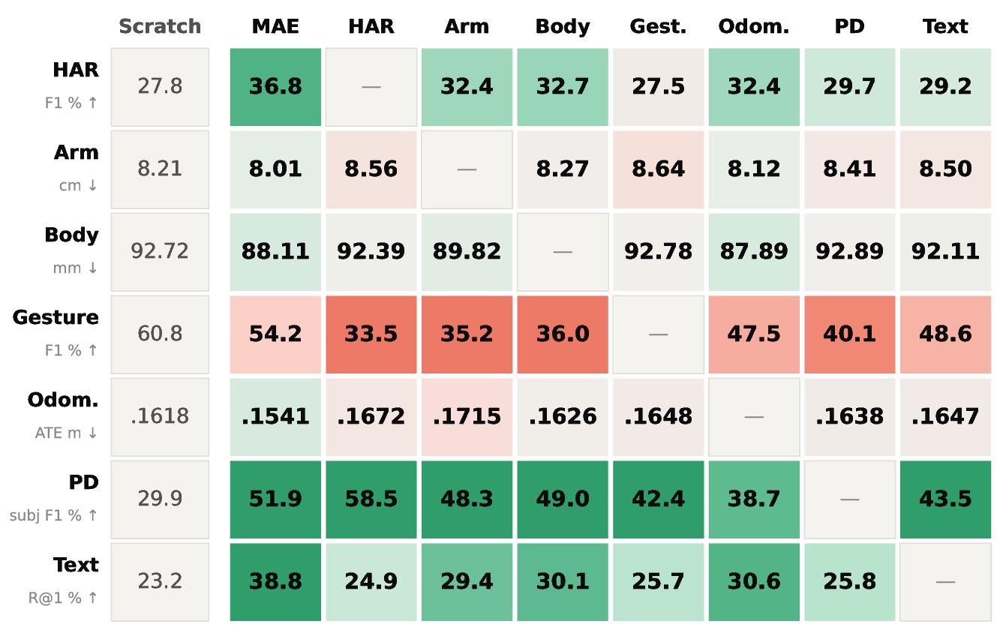
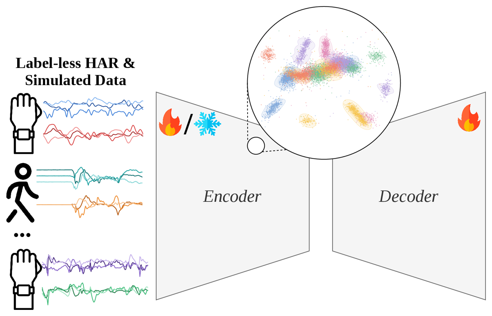
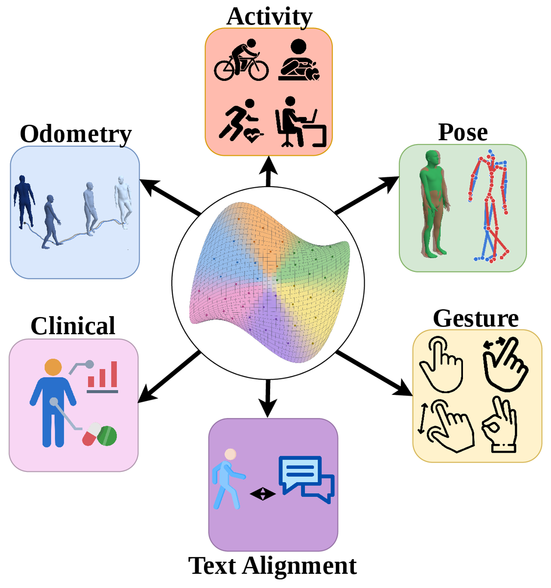

Benchmarking wrist IMU representations across kinematic, semantic and clinical tasks.

Joint rotations, metric velocity, a gesture label, a sentence, a diagnosis. Each task sees a different shadow of the same movement. IMU-Bench asks whether those views share a representation.
A smartwatch accelerometer and gyroscope capture locomotion, articulated limb motion, fine hand gestures and clinically relevant motor signs. Activity recognition, pose estimation, odometry, retrieval and clinical assessment each read a different part of that signal, and each offers only a partial view.
Self-supervised wearable models are usually tested on activity recognition or health classification under their own splits, decoders and pretraining corpora. That leaves open whether the same features support articulated joint rotations, metric velocity and motion–language correspondence, and whether supervision for one target helps or harms another.
How broadly do pretrained wrist features transfer, and is supervision for one task complementary to another? The benchmark fixes the backbone, one light decoder per task, the splits, the training budget and the model-selection rule, so differences come from the representation rather than the protocol.
Six self-supervised objectives, one backbone, one corpus, three protocols. The numbers separate what a pretrained encoder carries from what task supervision adds or takes away.
InrtlWrist, a masked autoencoder with alternating frame and global attention, leads the six matched methods under frozen probing on nine of ten primary metrics, and fine-tuning it beats training from scratch on nine of ten tasks.

Seven supervised source encoders, each trained from scratch on one task, are evaluated on the other six. Kinematic supervision transfers to kinematic targets. Nothing but the pretrained encoder carries language retrieval. Joint training gains on one task and loses on its partner.


A few results from the ablations that change how wrist-IMU benchmarks should be read.
With a linear readout, pretraining is worth 9.7 mm of full-body MPJPE over a random encoder; with the benchmark decoder, 7.1 mm. Adding temporal layers to the decoder shrinks the gap below 1 mm, and a 12-layer odometry decoder lets the random encoder beat every pretrained one. The benchmark therefore keeps its readouts light.
HHAR and gesture favor frozen probing. TransfHAR (72.7 to 86.1 F1) and PRISM (27.9 to 36.8) gain most from fine-tuning, and both kinematic tasks need it to pass training from scratch.
At 50,000 updates, uniform draws from 0.1% to 100% of a 1.96 M-window pool perform alike. Restricting pretraining to a few of 1,000 motion clusters hurts, most when little data is available. The result is conditional on the budget and the sampling scheme.
Accelerometer-only pretraining raises every kinematic error under both protocols and lowers frozen IMU–text Recall@1 from 27.9 to 20.7, while mean activity F1 only moves from 57.8 to 55.9.
Every pretraining corpus is checked against every evaluation set, and evaluation datasets are excluded from pretraining. OpenWatch's duplicated and mirrored participant records are merged into canonical identities before the subject split, and sensor units are verified for every source.
Every number comes from one registry-driven harness: a task card per task and an encoder card per model.
Ten tasks, eight datasets, six families. One task card per task fixes the inputs, decoder, split rule, metric and training budget, and every pretraining corpus is audited against every evaluation set.

Six self-supervised objectives on one 12-layer, 21 M-parameter ViT and one corpus of 197,094 unlabeled wrist windows. Each encoder is scored under frozen probing, fine-tuning and training from scratch with the same decoder.

Seven supervised source tasks evaluated on six targets each, plus joint-training pairs, separate broadly useful pretraining from complementary task supervision.
Every task reads the same accelerometer and gyroscope stream from a single wrist. Click a card for the dataset, output and split.
Six matched pretraining methods share the backbone, the corpus and every task recipe. Bold marks the best among them per column, ties included. Reference rows do not compete.
| Encoder | Arm posecm ↓ | Full-body poseMPJPE mm ↓ | OdometryATE m ↓ | Gestureclip F1 ↑ | IMU–textR@1 ↑ | Parkinson'sparticipant F1 ↑ | Activitymean F1 ↑ |
|---|---|---|---|---|---|---|---|
| InrtlWrist (ours) | 8.14 | 97.9 | 0.200 | 64.7 | 27.9 | 55.2 | 57.8 |
| LIMU-BERT | 8.14 | 98.5 | 0.208 | 61.7 | 24.9 | 50.5 | 56.2 |
| SimMTM | 8.47 | 103.6 | 0.224 | 55.9 | 17.2 | 48.7 | 53.1 |
| FOCAL | 8.71 | 108.4 | 0.240 | 48.1 | 8.6 | 40.7 | 44.2 |
| RelCon | 8.50 | 104.3 | 0.215 | 38.5 | 13.2 | 40.5 | 35.4 |
| SSL-Wearables | 8.42 | 101.7 | 0.220 | 54.7 | 24.8 | 57.4 | 55.1 |
| NormWear (released, 136 M) | 8.39 | 107.7 | 0.295 | 43.8 | 15.5 | 56.6 | 38.2 |
| Random frozen encoder | 8.46 | 105.0 | 0.233 | 36.4 | 9.5 | 51.7 | 26.2 |
| Same backbone, from scratch | 8.21 | 92.7 | 0.162 | 60.8 | 23.2 | 29.9 | 53.3 |
| Encoder | Arm posecm ↓ | Full-body poseMPJPE mm ↓ | OdometryATE m ↓ | Gestureclip F1 ↑ | IMU–textR@1 ↑ | Parkinson'sparticipant F1 ↑ | Activitymean F1 ↑ |
|---|---|---|---|---|---|---|---|
| InrtlWrist (ours) | 8.01 | 88.1 | 0.154 | 54.2 | 38.8 | 51.9 | 63.9 |
| LIMU-BERT | 8.18 | 89.7 | 0.158 | 57.3 | 36.6 | 46.0 | 56.1 |
| SimMTM | 8.44 | 92.9 | 0.163 | 61.9 | 32.4 | 46.8 | 52.1 |
| FOCAL | 8.66 | 95.9 | 0.177 | 39.3 | 22.4 | 46.3 | 56.1 |
| RelCon | 8.55 | 92.1 | 0.167 | 42.7 | 30.0 | 49.1 | 52.8 |
| SSL-Wearables | 8.57 | 90.6 | 0.166 | 58.3 | 34.5 | 48.7 | 56.7 |
| NormWear (released, 136 M) | 8.54 | 102.2 | 0.297 | 21.0 | 15.7 | 43.1 | 27.8 |
| Same backbone, from scratch | 8.21 | 92.7 | 0.162 | 60.8 | 23.2 | 29.9 | 53.3 |
Activity is the mean macro-F1 over HHAR, MHEALTH, PRISM and TransfHAR. Gesture and Parkinson's are the OpenWatch test split and the PADS participant metric. NormWear is a released checkpoint run through the benchmark unchanged, with its own corpus and size. Secondary metrics for every cell are in the released result files.
IMU-Bench separates broad downstream usefulness from complementary task supervision. Code, task cards, splits, the pretrained InrtlWrist encoder and every per-cell result file will be released with the paper.